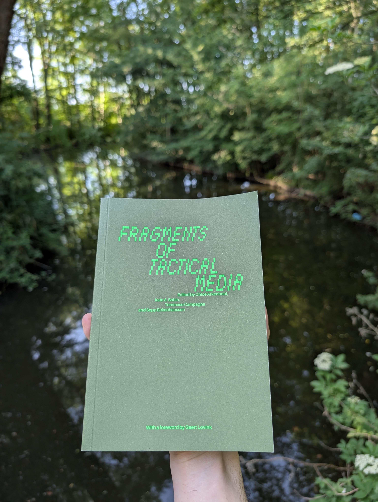
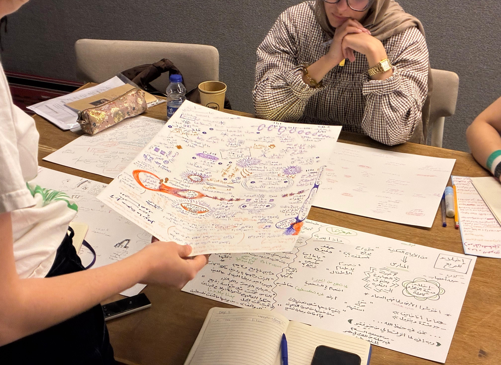
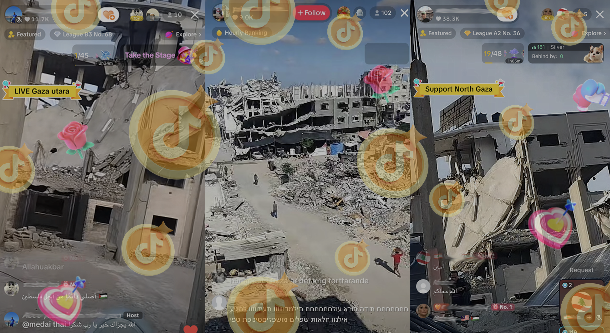
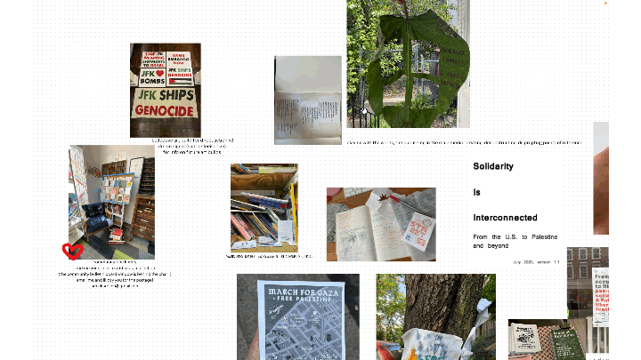
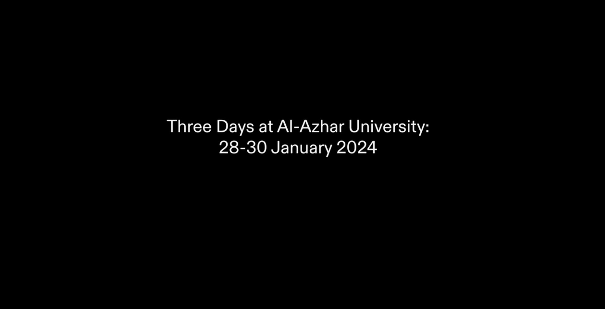
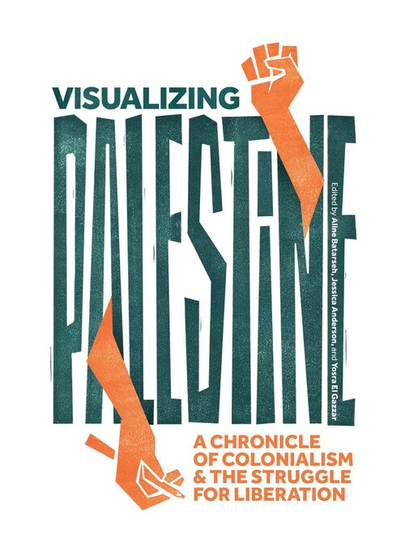
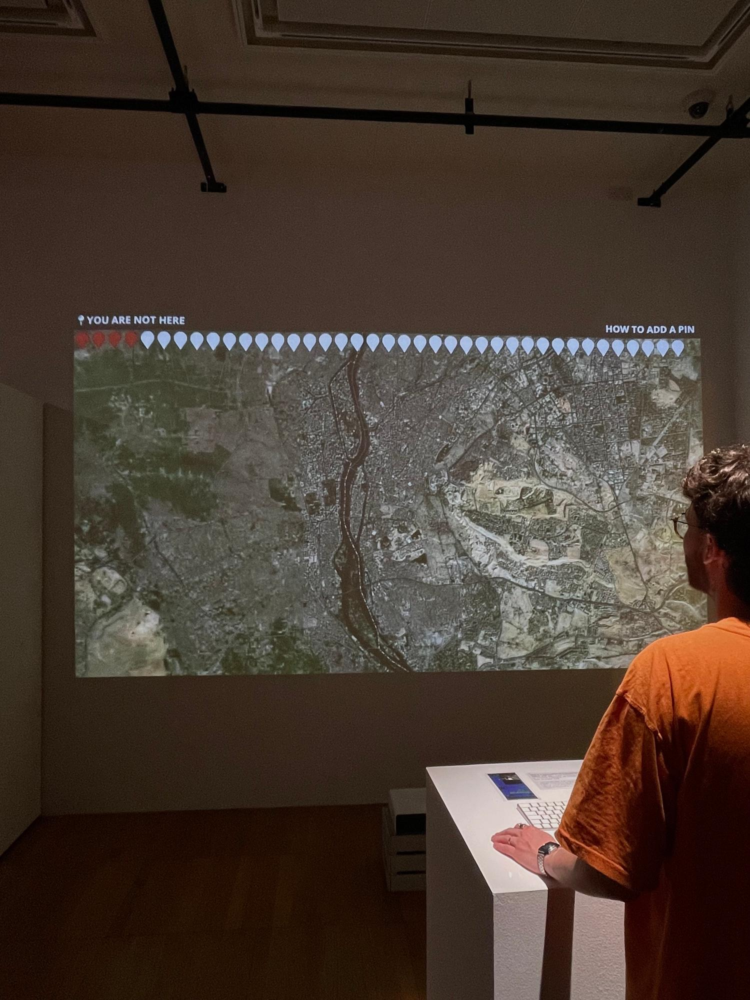
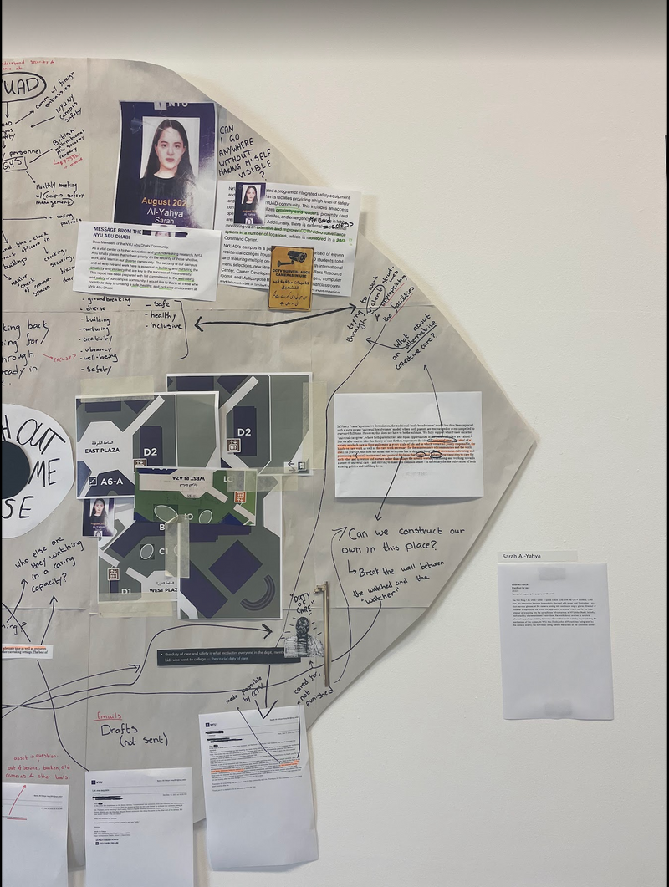
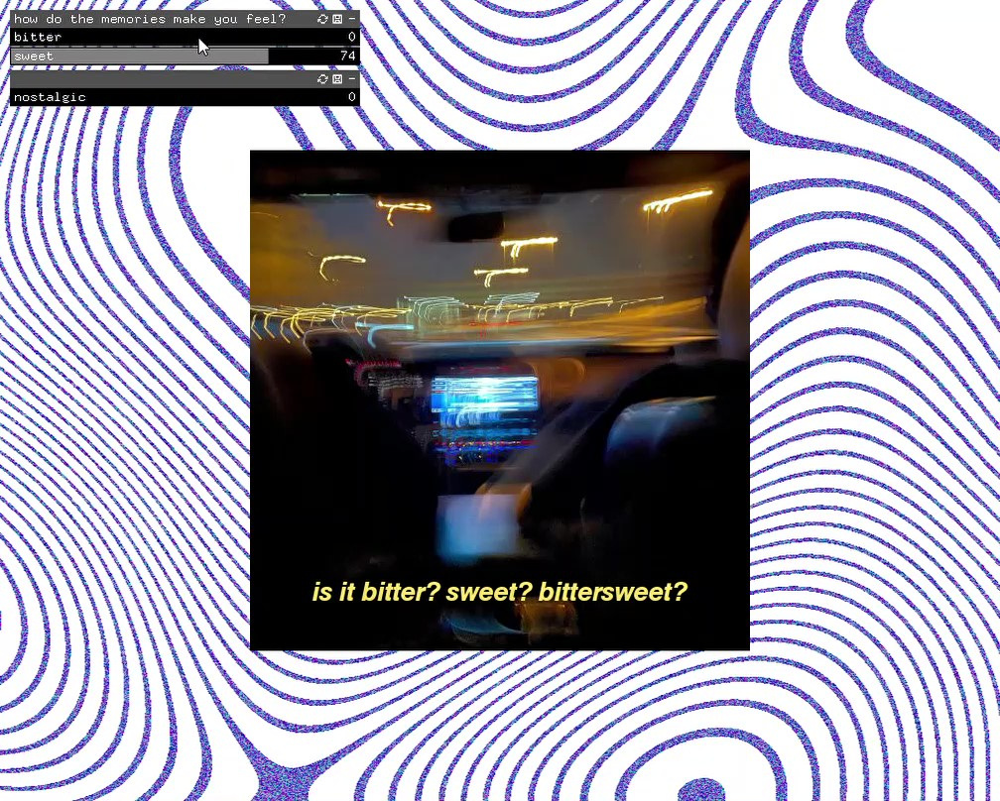

art
collaboration
How to Train Your Chatbot
2026
research & writing
Witnessing Gaza on TikTok LIVE
2026
workshop
collaboration
Attentive Listening as a Practice
2026
art
Tap & Share
2025
workshop
collaboration
TO THE STREETS!
2024–2025
research & writingart

research & writing
Visualizing Palestine: A Chronicle of Colonialism
2024
art
Return to Sender
2023
art
Between Banks
2023
art
You Are Not Here
2023
art
Watch out for me, please
2022
art